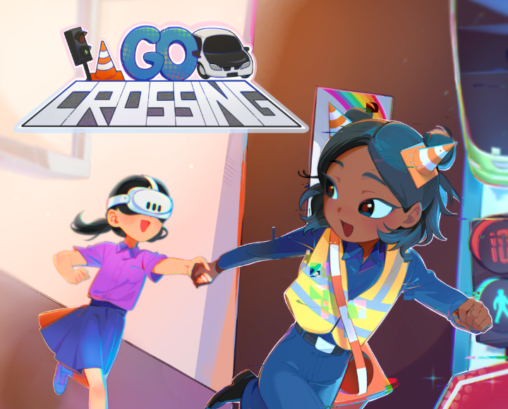
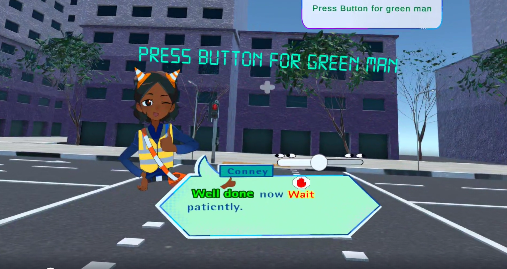
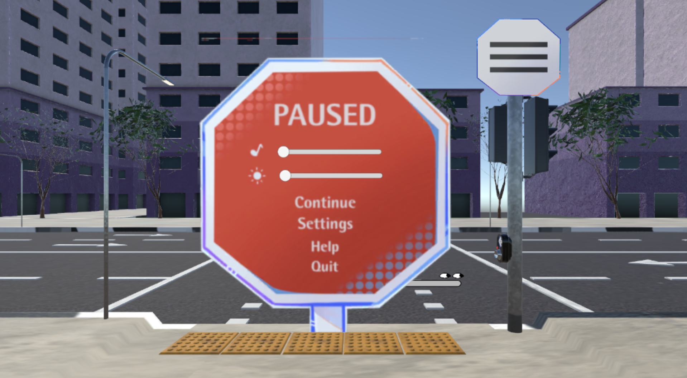

Guide character
Conney walks players through each step with friendly, colour-coded dialogue and encouragement.
An educational VR road-crossing game that helps children with special needs learn how to cross the road safely.

For my Final Year Project, I worked on GO: Crossing, an educational VR game where children with special needs practise crossing the road safely in a realistic but risk-free street environment.
Grace Orchard School, a special needs school, wanted a VR road-crossing game that simulates real-life scenarios, to help teach their students how to cross the road safely.
Conney walks players through each step with friendly, colour-coded dialogue and encouragement.
Players press the button for the green man and learn to wait patiently before crossing.
An animated pause menu styled as a stop sign, with volume, weather, effect and time settings built into the scene.
I was one of three programmers on a team of seven, alongside four artists. I built most of the step-by-step crossing gameplay and the menus, and handled much of the audio and cinematic work. I was also the main point of contact between the programmers and the art team, telling the artists what assets the programmers needed and keeping both sides updated on how the project was pacing.
Designing systems that help the students understand the instructions and tasks clearly. Some of our original ideas didn't work out or were too hard for the students and teachers to follow.
We ran multiple playtest sessions with the students and teachers, watched how they interacted with the environment and instructions, and adjusted our design to match.


I learned how important playtesting is. Watching playtesters gave me much better insight into how to design the game so the instructions and gameplay were clear for the students.